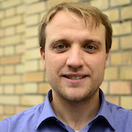

Go to: Local Node Leaders Local Node Activities Local Node Members How to join
Local Nodes of the SwissRN build the backbone of the network by initiating and coordinating activities at universities and other research institutions. Activities of local nodes are manifold, e.g.
- open research working groups
- ReproducibiliTea journal clubs
- organisation of training activities such as carpentries workshops
- grant and ethics peer review groups etc
The organisation of local nodes differs from institution to institution: from a formalised administration to informal grassroot groups. SwissRN encourages to ensure that membership is open to academic and research staff (at all levels) and professional services staff. Each Local Node has a Local Node Leader providing the point of contact for SwissRN.
Local Node Leaders
| Institution | Unit | Contact | |
|---|---|---|---|
| CERN | Information Technology | Tibor Simko  |
 |
| École polytechnique fédérale de Lausanne (EPFL) | Neuroscience – Brain Mind Institute | Michael Herzog |
 |
| ETH Zürich | NEXUS Personalized Health Technologies | |
|
| FernUni Schweiz | Economics / Applied Mathematics | Michael Kurschilgen / Matthias Voigt |
 |
| Haute Ecole Spécialisée de Suisse occidentale (HES-SO) | Data Mining and Machine Learning group | Grigorios Anagnostopoulos |
 |
| Idiap Research Institute | AI for Trust Group and Biometrics Security & Privacy Group / Biosignal Processing Group |
/ André Anjos |
 |
| St.Gallen University of Teacher Education | Research Methods Working Group | Michael Beck |
|
| Swiss Institute of Bioinformatics (SIB) | Bioinformatics | Patricia Palagi |
 |
| University of Basel / University Hospital Basel |
Department of Environmental Sciences/ Department of Biomedical Engineering | / |
  |
| University of Bern (Unibe) | Veterinary Public Health Institute, Animal Welfare Division | |
|
| University of Geneva (Unige) | Swiss Center for affective Sciences/ Faculty of Psychology and Educational Sciences | Florian Cova / Evie Vergauwe |
  |
| University of Lausanne (Unil) | Persuasive Technology Lab/ Applied Face Cognition Lab (AFC Lab) |
/ Meike Ramon |
  |
| Université de Neuchâtel (Unine) | Institut de Psychologie du Travail et des Organisations | Laurenz Meier |
 |
| Università della Svizzera italiana (USI) | Data Science Lab | Antonietta Mira |
|
| University of Zurich (UZH) | Center for Reproducible Science | Leonhard Held |
 |
| Zurich University of Applied Sciences (ZHAW) | Institute of Data Analysis and Process Design (IDP) | Christoph Hofer |
Local Node Activities
Local Node Members
Find our members on our website.
Find our members on the CRS website.
University of Basel
University of Geneva
University of Zurich
How to join
If you are organising a local group with pertinent activities/goals and want to become a Local SwissRN Node please send an email to Manuela Höfler.